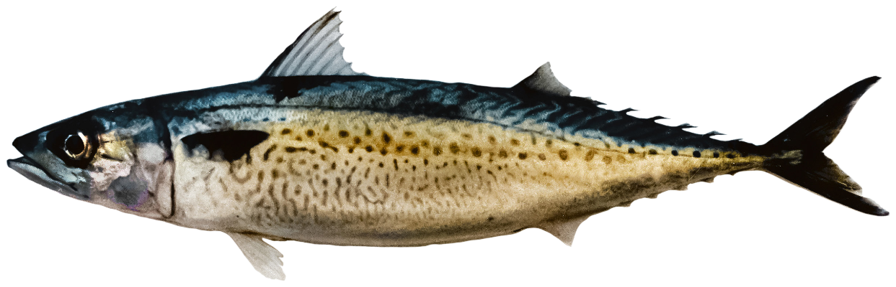
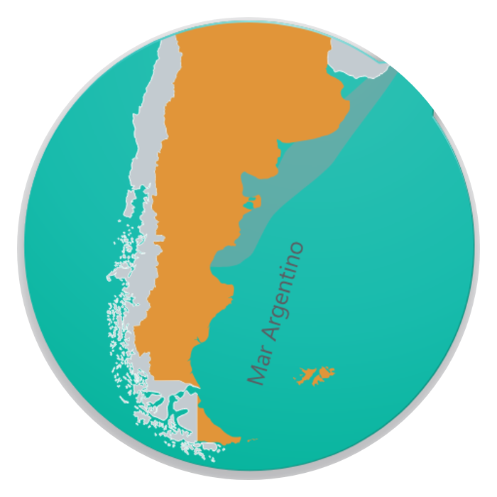

FICHA TÉCNICATECHNICAL DATA SHEET
Caballa — Atlantic Chub Mackerel
Scomber colias Gmelin, 1789
Identificación / Identification
Nombre comercialCommercial nameCaballaAtlantic Chub Mackerel
Nombre científicoScientific nameScomber colias Gmelin, 1789
FamiliaFamilyScombridae
ÓrdenOrderScombriformes
Código HSHS Code0303.54
Zona de pesca / Fishing area
OcéanoOceanAtlántico SudoccidentalSouthwest Atlantic
Zona FAOFAO Area41
PaísCountryArgentina — Mar ArgentinoArgentina — Argentine Sea
DistribuciónDistributionNueva Escocia (45°N) al sur de Argentina (46°S); dos stocks (límite 39°S)Nova Scotia (45°N) to southern Argentina (46°S); two stocks (limit 39°S)
ProfundidadDepth0–300 m
Arte de pescaFishing gearRed de cerco (stock norteño) y redes de media agua (stock sureño)Purse seine (northern stock) and mid-water nets (southern stock)
TemporadaFishing seasonPrimavera: stock sureño ago–oct · stock norteño nov–dicSpring: southern stock Aug–Oct · northern stock Nov–Dec

Biología / Biology
Talla máx.Max size59 cm
Peso máx.Max weight≈ 900 g
Ciclo de vidaLife cycleMadurez 24–27 cm (1–2 años); edad máx ≈ 10 añosMaturity 24–27 cm (1–2 yrs); max age ≈ 10 yrs
ColorColorDorso azul verdoso; blanco iridiscente en flancos y vientreBluish-green back; iridescent white flanks and belly
Especie euritérmica (9–22 °C) y eurihalina. Destino principal: conservera (mercado interno) y exportación congelada entera (Brasil).
Eurythermal (9–22 °C) and euryhaline species. Main destination: canning (domestic market) and frozen whole export (Brazil).
Presentaciones / Presentations
| ProductoProduct | PresentaciónForm | Envase y congeladoPacking & freezing |
|---|---|---|
| Entera | Con cabezaWith head | Congelada (exportación a Brasil) |
| Conservera | En lata / aceiteCanned / in oil | Producto elaborado (mercado interno) |
| Entera congelada | IQFIQF | Congelado · ≤ −18 °C |
Producto congelado a bordo o en tierra. Conservación a ≤ −18 °C.
Frozen on board or on shore. Stored at ≤ −18 °C.
Composición nutricional / Nutritional composition (per 100 g, raw)
17,8–20,0 g
ProteínaProtein
2,0–19,8 g
LípidosFat
1,60 g
Omega-3 (EPA+DHA)
90–258 kcal
EnergíaEnergy
Proteínas, lípidos y energía: INIDEP 2018 (rangos, producto fresco). Omega-3: referencia FishBase/FAO. No sustituyen un análisis de laboratorio del lote.Protein, fat and energy: INIDEP 2018 (ranges, raw product). Omega-3: FishBase/FAO reference. Not a substitute for a batch laboratory analysis.
Conservación y trazabilidad / Storage & traceability
ConservaciónStorageCongelado ≤ −18°CFrozen ≤ −18°C
SistemaSystemIQF / Block / InterfoliadoIQF / Block / Interleaved
Vida útilShelf life24 meses24 months
TrazabilidadTraceabilityPor lote / capturaBy batch / catch
frompatagoniaseafoodarg
By Sottomarina SA / Guigus SA
Fuente / Source: INIDEP 2018 · FishBase (Scomber colias) · FAO